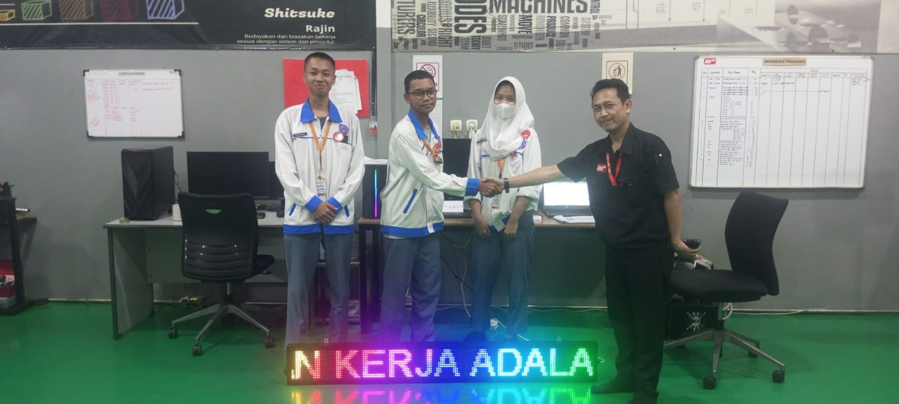
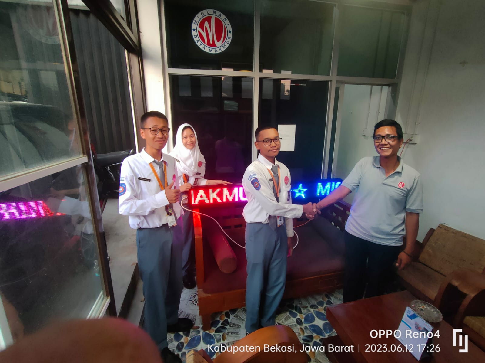
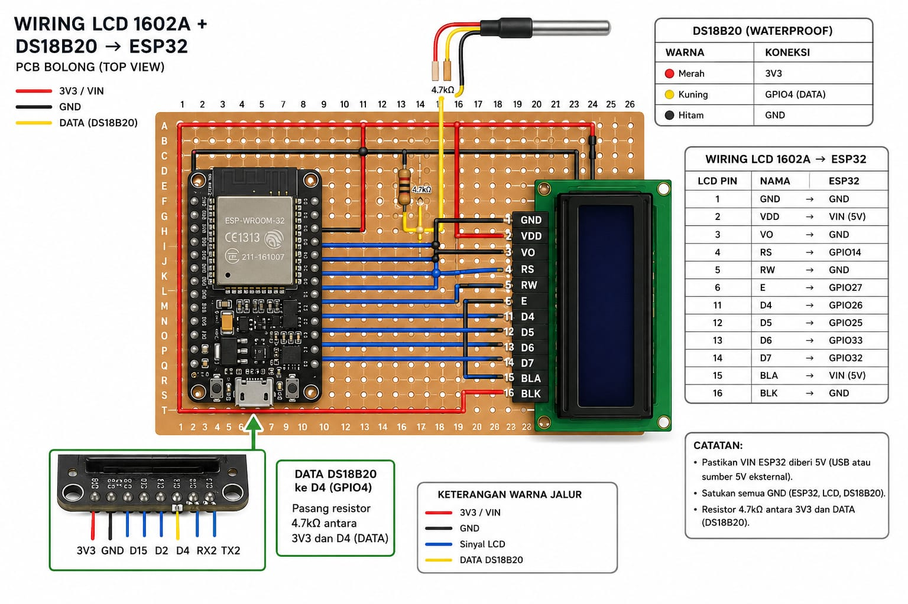
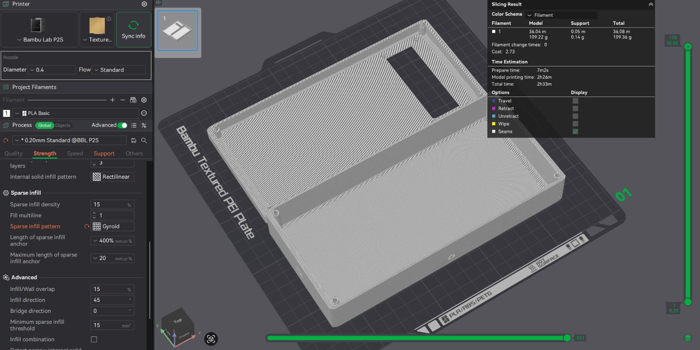
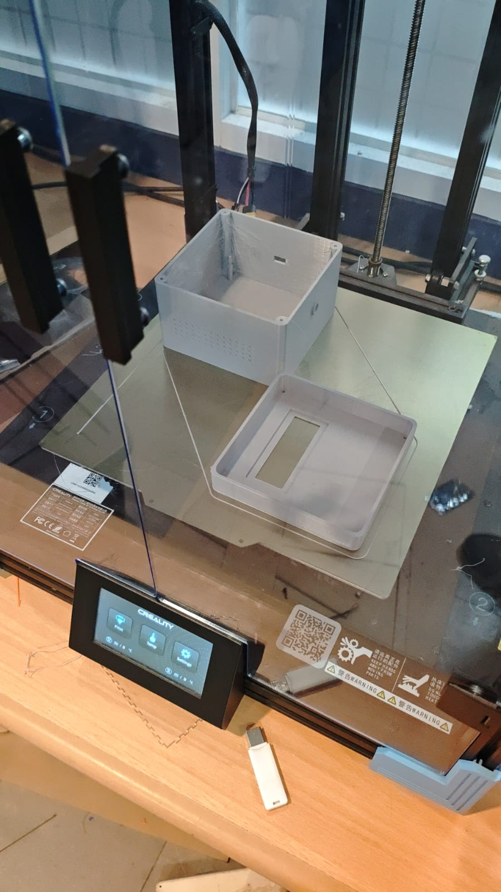
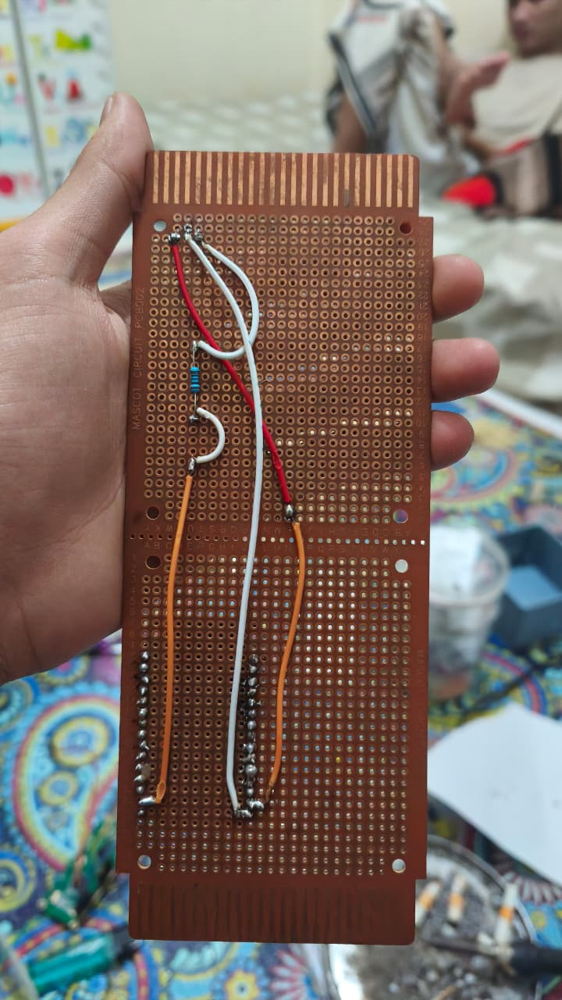
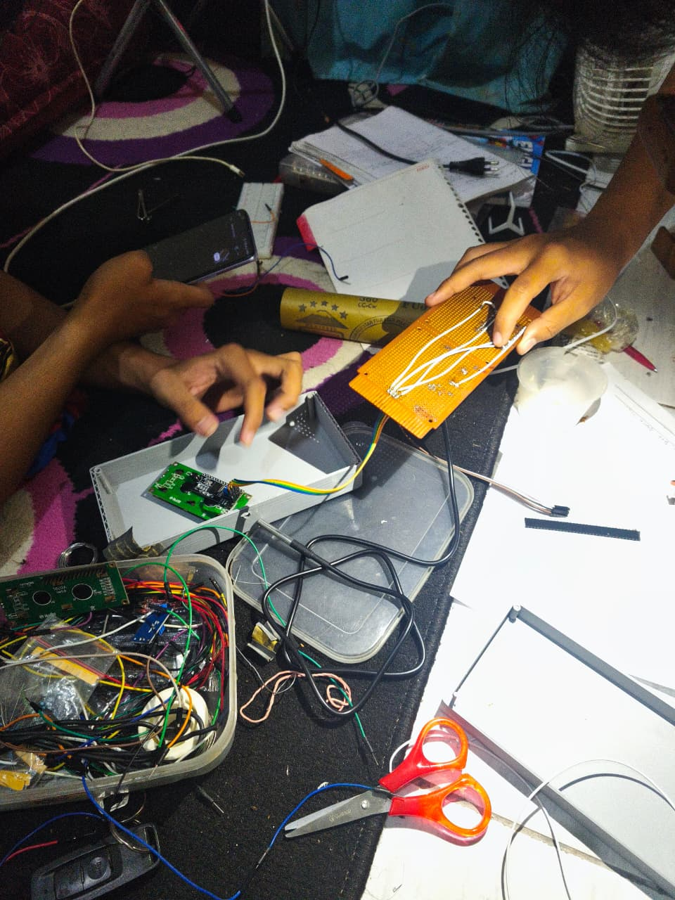
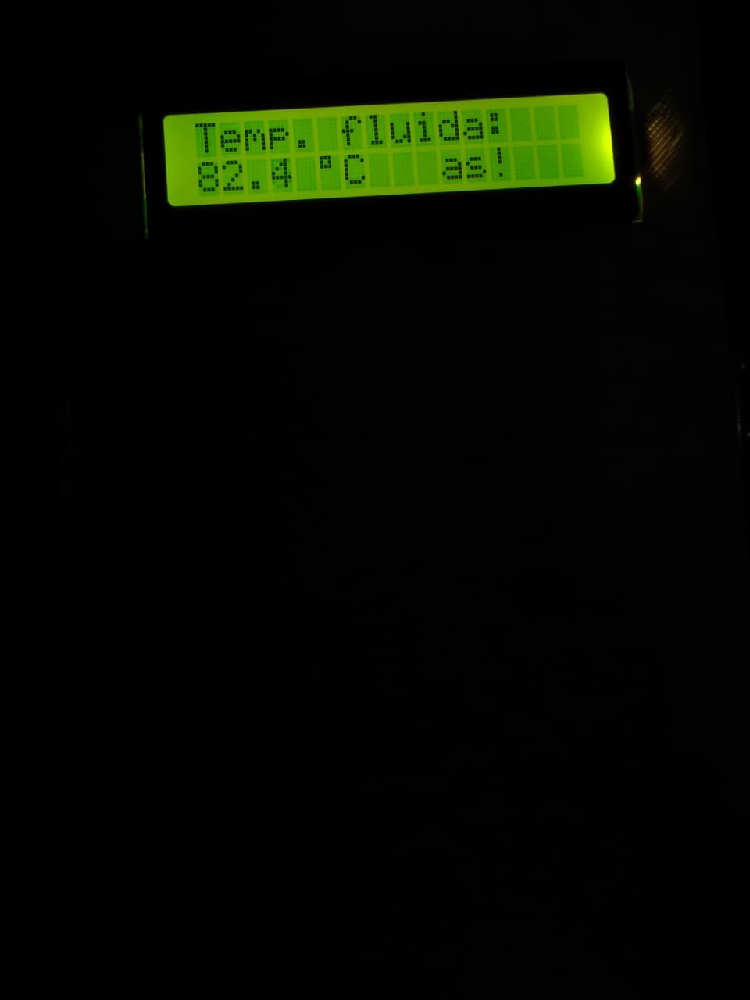

Running Text Project
A technical school project focused on assembling and testing running text displays, providing hands-on experience with electronic components, wiring, and basic troubleshooting.
Academic, personal, and technical projects

A technical school project focused on assembling and testing running text displays, providing hands-on experience with electronic components, wiring, and basic troubleshooting.

A technical school project focused on assembling and testing running text displays, providing hands-on experience with electronic components, wiring, and basic troubleshooting.






Built a fluid temperature measurement device for a final exam project. A waterproof DS18B20 sensor is read by an ESP32 and shown on a 16x2 LCD. The circuit was soldered on a perfboard and housed in a custom 3D-printed enclosure.